I grew up in oregon and my grandparents had some land out in the woods just out of town. They had this old 1982 Honda XR 250 and when I was about 12 years old it was my dream to be big enough and stong enough to ride this motorcycle.
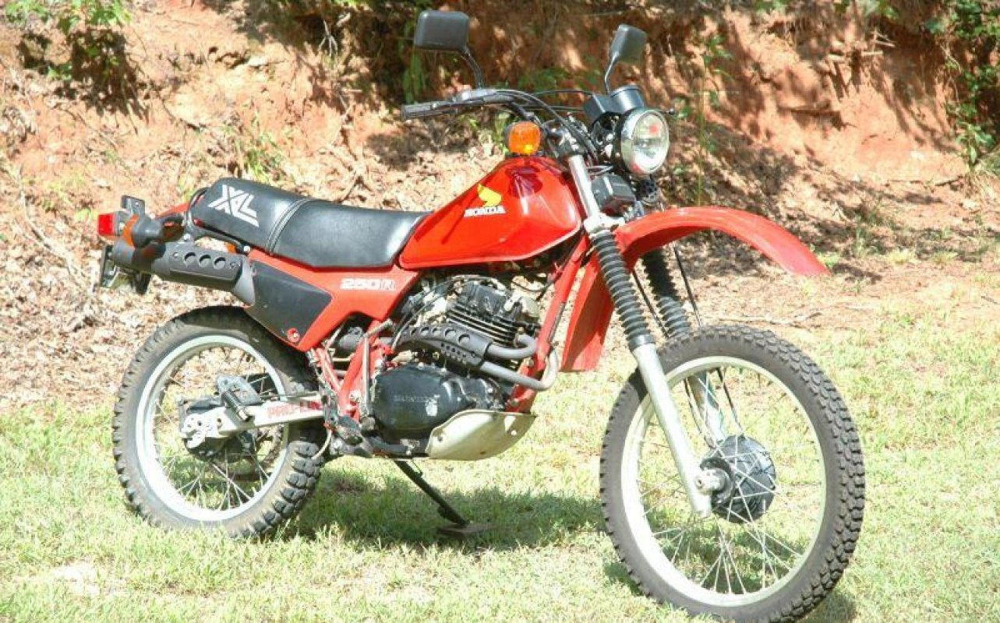
I moved to Utah in 2006 and never imagined I'd get to buy my own dirt bike. A real childhood dream!
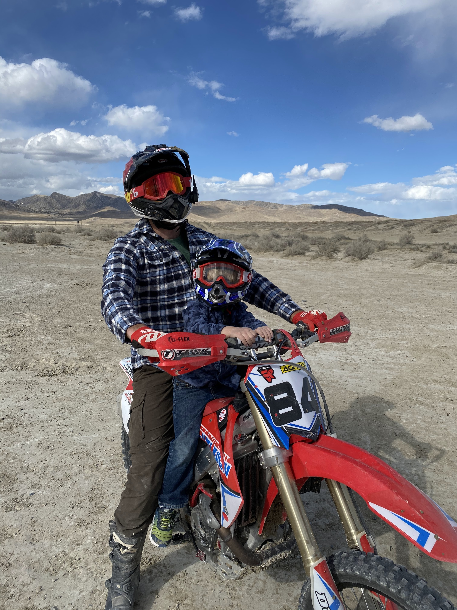
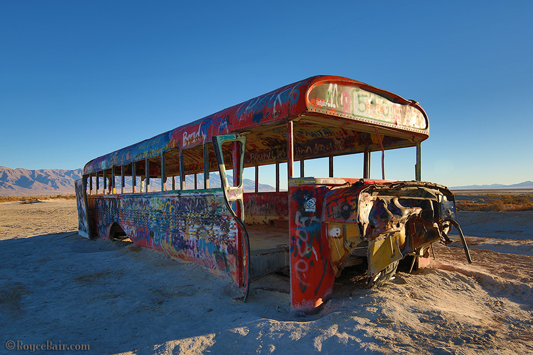
Brand new to the riding scene in Utah, I needed to find somewhere to ride. I asked around and local motorcycle shops and got some tips.
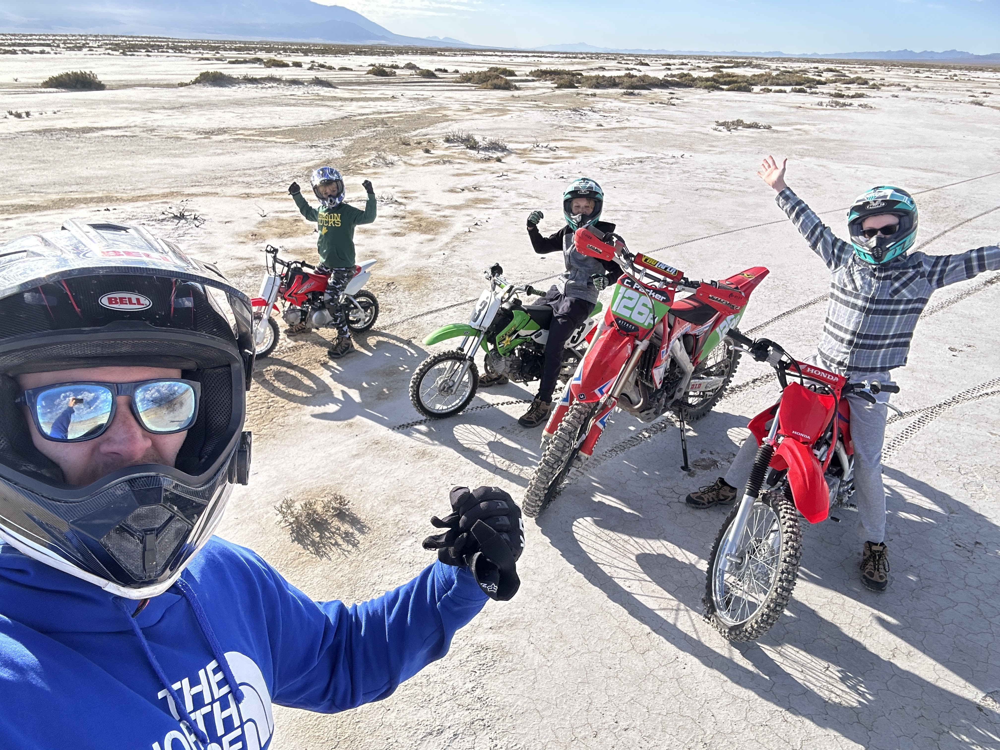

My brother and I caught the same bug as kids, and it wasn't long until he bought a bike too and we entered into a desert race!
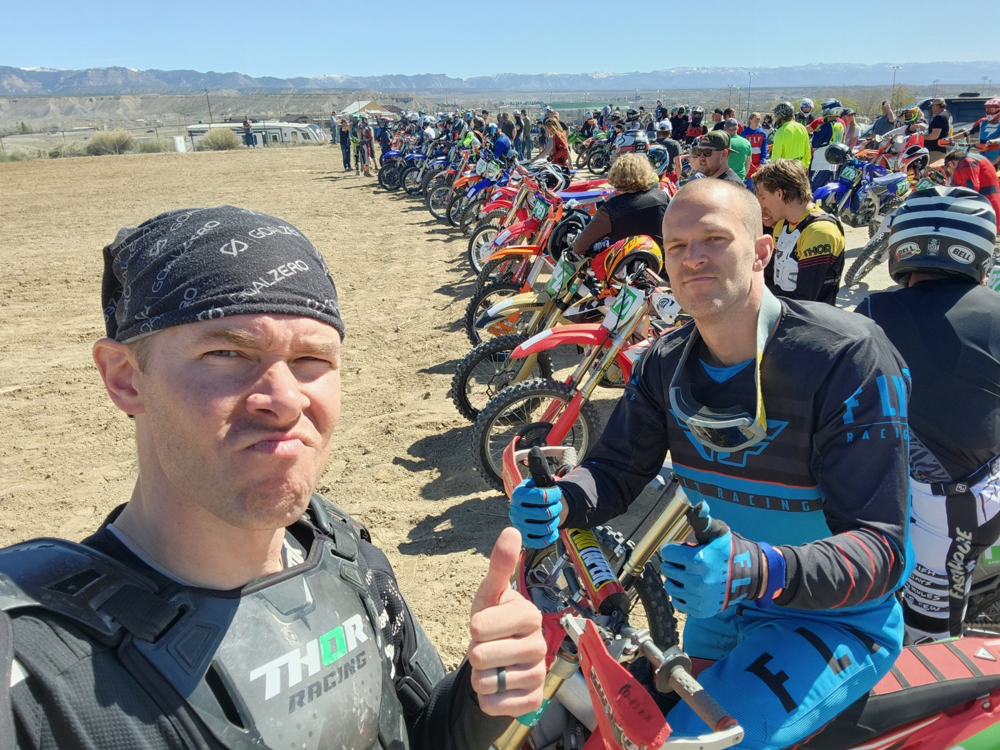
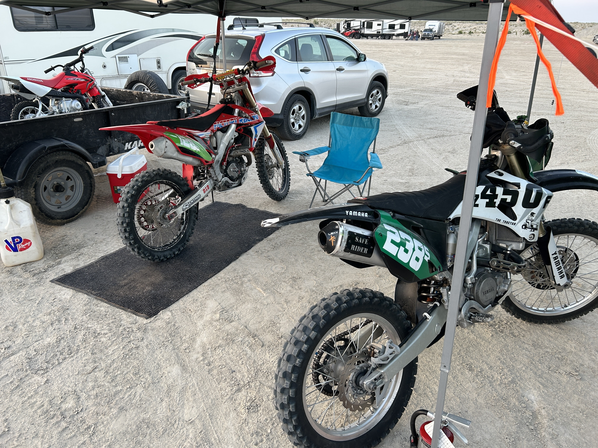
Riding a dirt bike and being safe takes a lot of gear.
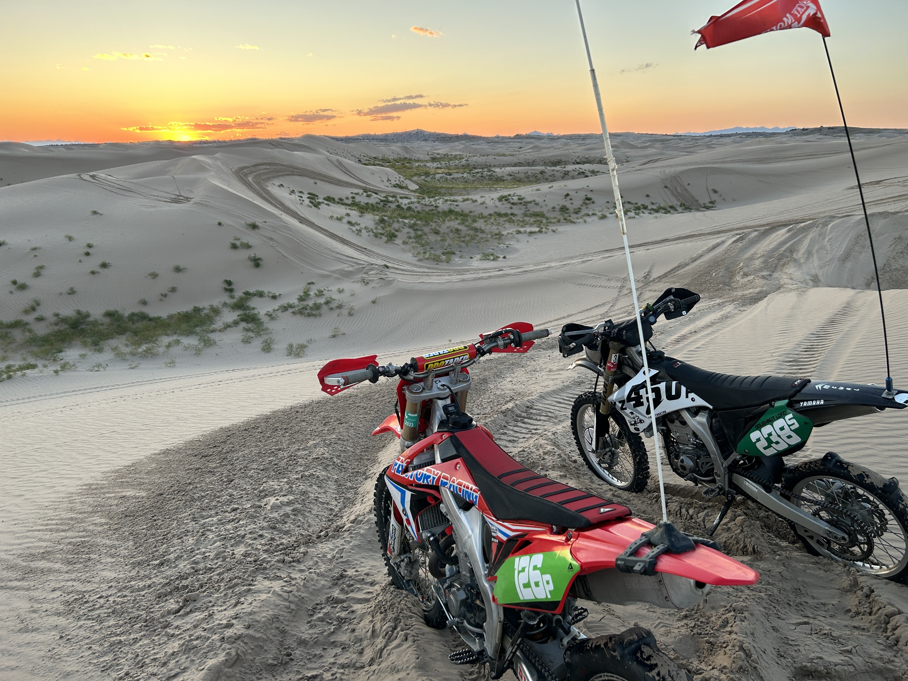

| Name of the Area | Description | Staging Location | Type of Riding | Difficulty |
|---|---|---|---|---|
| Delle | Delle, Utah is located along Interstate 80 about 50 miles west from Salt Lake. It’s a flat, open desert area open to pretty much anything. This was the first time I had ridden a dirt bike outside of riding around the trails at my Grandparents’ land. The wide open terrain makes it great for new riders and kids. I like to take my kids out there to camp and ride. | 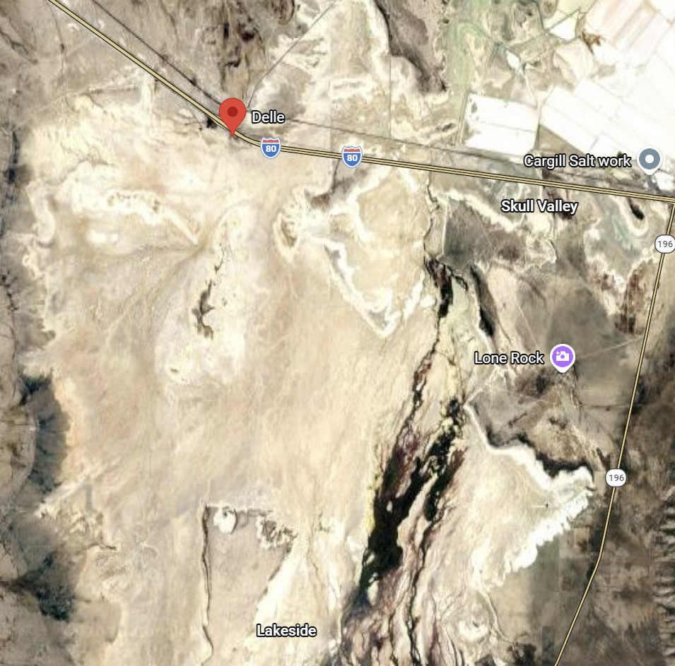 | Open Desert | All levels |
| Jordan River | Just off of I215, Jordan River is a motocross track that requires a Utah OHV permit and they charge a day fee. Right now its $25. This was the first motocross track I had ever been on. A friend of mine took me there and I fell in love with the flow of the track and smooth jumps. I typically go once or twice a year, but stick to the smaller, easier tracks. | 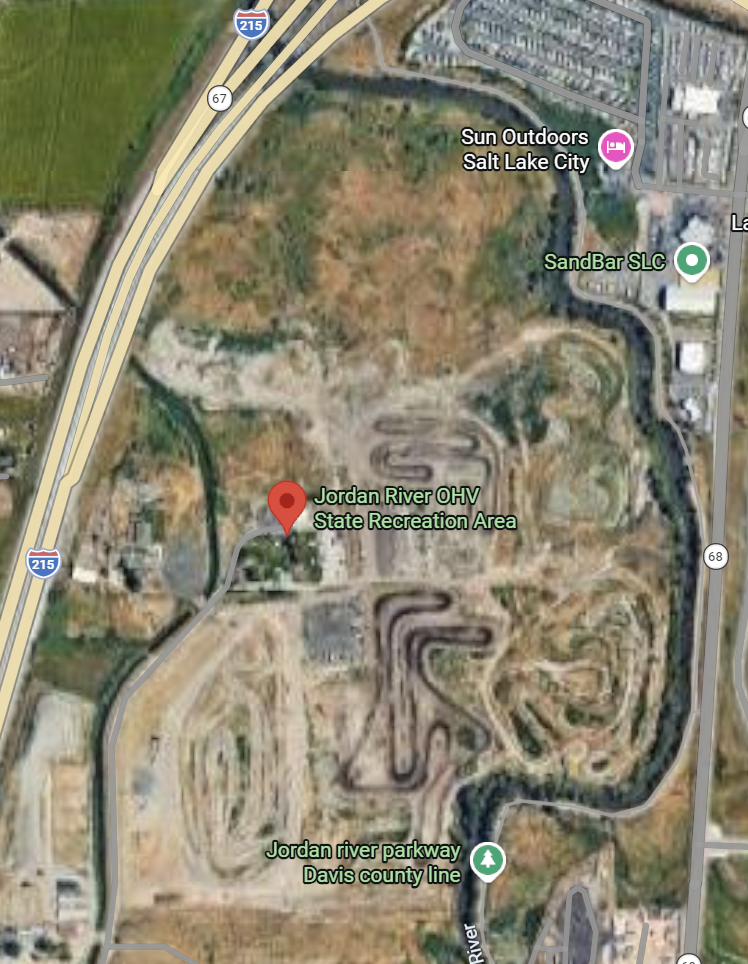 |
Motocross track | All levels, but mostly advanced |
| Hobble Creek | Hobble creek is a single track trail area. Meaning the trail is meant for a two wheeled vehicle. Too narrow for a 4-wheeler. This area is a ton of fun, but its steep and rocky in areas, making it more of an intermediate place to ride. My brother and I ride here a few times a year. I love the challenge of the terrain and the views from the top are amazing. | 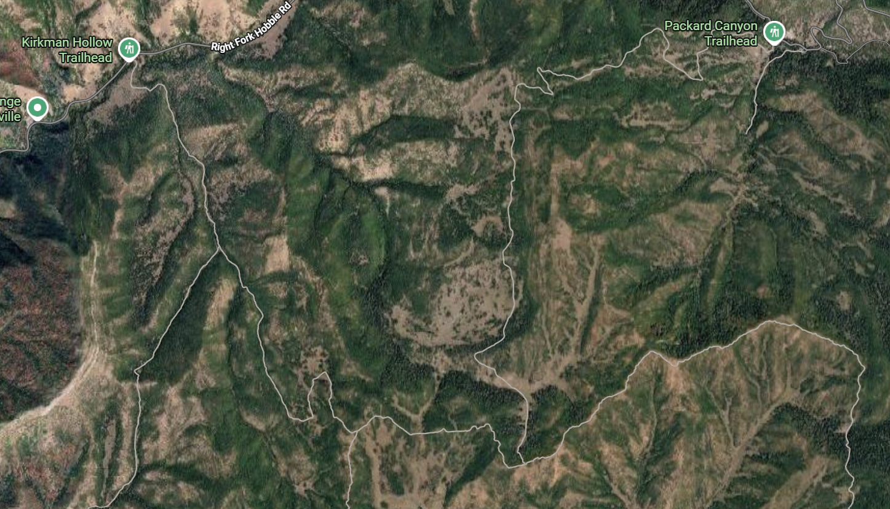 |
Single track | Intermediate |
| Little Sahara | This is one of my favorite areas to ride. It’s a sand dune area about 100 miles or 2 hours south west of Salt Lake City. I have to put a paddle tire on my bike in order to get around in the sand. Riding the bowls and finding little jumps is so much fun and its beautiful out there! | 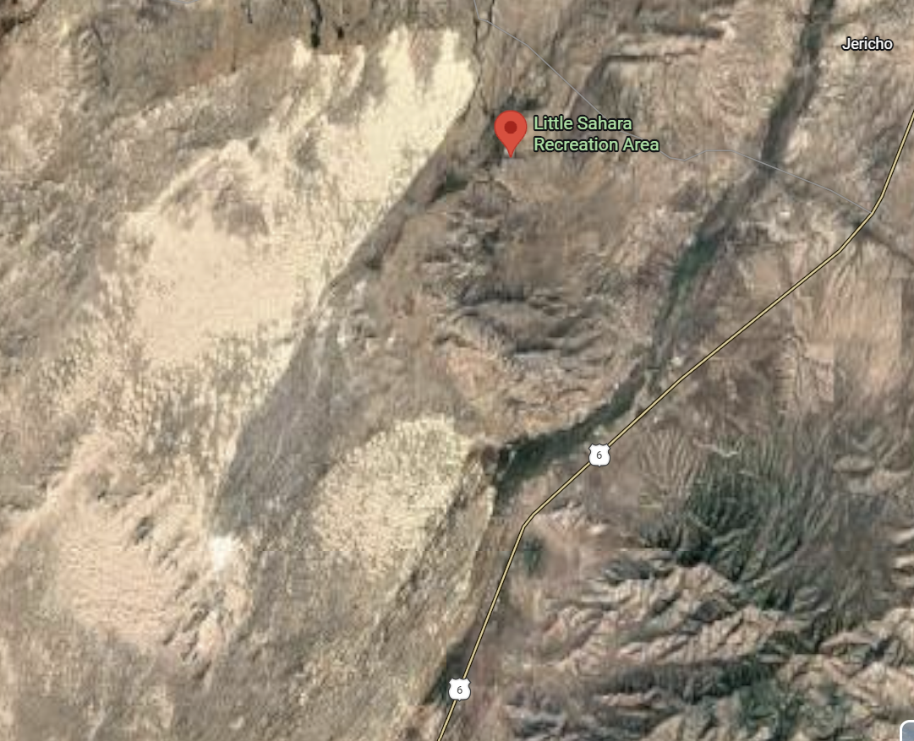 |
Dunes | All levels |
| Cherry Creek | Cherry Creek is about 30 minutes north of little Sahara. Its dirt trails with a mix of single track and double track. There are some rocky and steeper areas, but its mostly flat with a lot of intersecting trails to explore. | 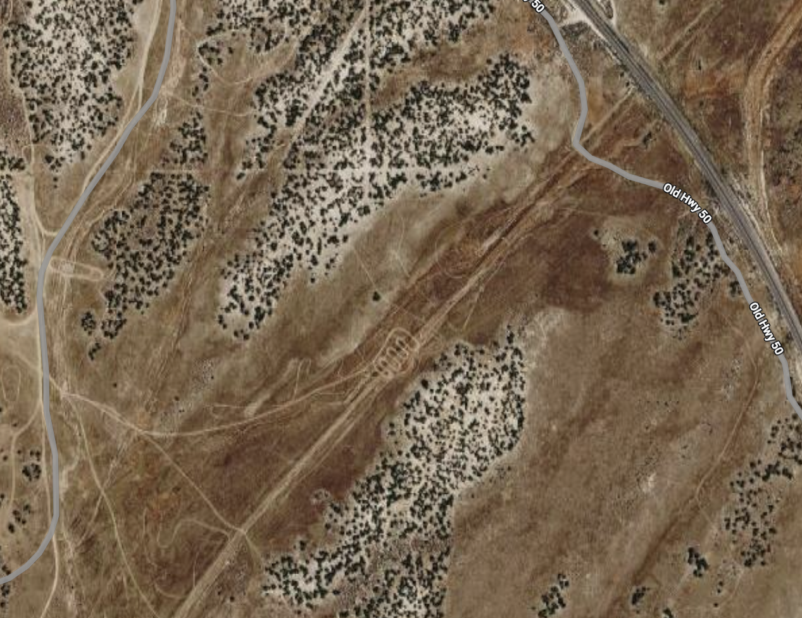 |
Single track | Beginner to intermediate |
| American Fork Canyon | AF is probably the most commonly spoken of dirt bike trail riding area, but its not the easiest. Its just a few miles up American Fork Canyon and the trails are mostly single track. There are some really fun switch backs, but a lot of the trails are steep, loose, and rocky. Rider beware. | 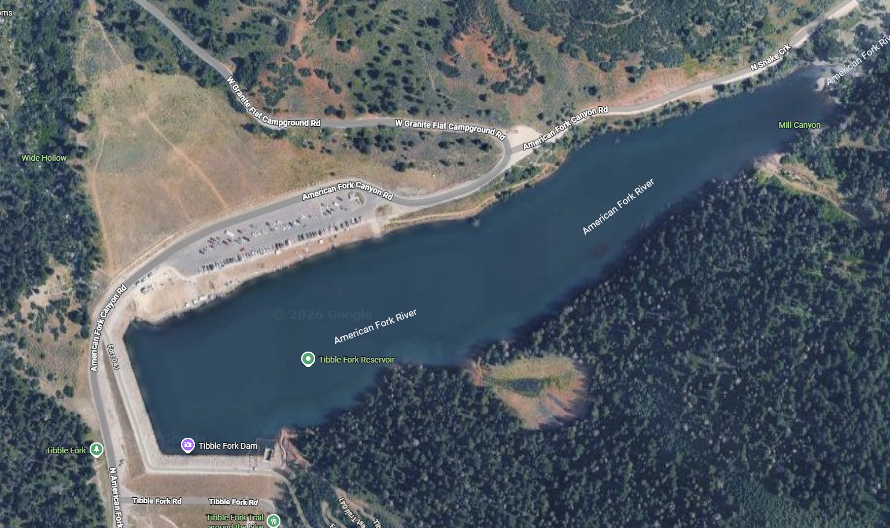 |
Single track | Intermediate to advanced |